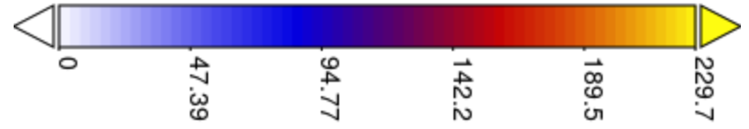
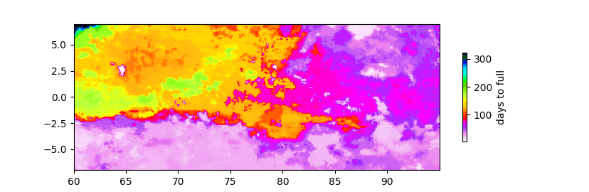
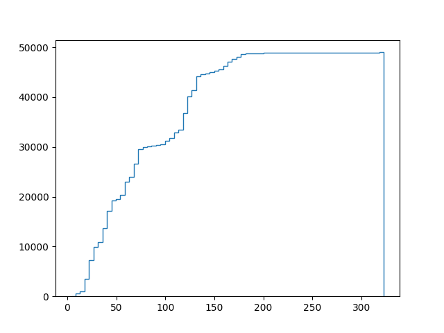

One purpose of brainstorming is to kill an unworkable idea early before it sucks up too many resources. I view it as a backward sales process—rather than enumerating the key selling points to close a deal, practical brainstorming needs to confront critical vulnerabilities to see if they’re fatal to an idea. As a consequence, this series of installments may end abruptly if a fatal flaw is identified.
A number of my more engineering-focused readers have pointed out that the aerodynamics of the design illustrated in the last installment 1 might make for some interesting challenges simply because it’s also a helluva sail stretching for nearly a mile in the air. They’re probably right: One could easily imagine that the forces acting on this particular design would cause failures like tearing the fabric or breaking the connection to the collection vessel because of the aerodynamic lift from what amounts to an enormous kite.
But the question at hand is, is that a fatal vulnerability? The solution we’re considering isn’t actually “a big-ass funnel floating over a supertanker” (although that visual is compelling). Instead, it’s exploring the prospect of designing some kind of gadget to collect solar-distilled fresh water that falls from the sky before it enters the ocean. The water must be delivered to arid areas without adding more CO2 to the atmosphere (hence the funnel, powered by gravity, and the sailboat, powered by wind). Based on time, location, and volume constraints, the collection has to be achieved over a relatively large area in an isolated, off-shore environment. But, the design challenge isn’t necessarily building a floating funnel. It’s a challenge for clever engineers and their computers, one they can undoubtedly rise to—I’ve worked with enough engineers to avoid prescriptive solutions that constrain their creativity!
One issue that could prove fatal, however, is the specifics of rainfall patterns. Collection depends on being in the right place at the right time, generally for a few hours during a storm. We know that, on average, in some ocean regions, 12 feet of rain falls annually. However, as noted last time, these are mainly thunderstorms, with downpours of an inch per hour, interspersed with extended periods of no rain. If we cannot position our boat ahead of time where precipitation will fall, then the concept will fail regardless of the technology we use for collection.
It’s a challenging thing to calculate (plus, that’s more math), so I thought I’d try more visuals to see if we can see the situation more clearly:

This plot is in millimeters per day for each day of 2022, starting on January 1, in the Indian Ocean near the Equator (between 60° and 95°E longitude). White, in this instance, reflects no rain. The color map shows increasing heat intensity (up to 9 inches per day). [I apologize for the slowness of the video. It was the default output (0.5 fps), and I didn’t have time to screw around with it. I recommend that you use the progress bar to scrub.] What you’ll see is that rainfall does seem to be spotty and somewhat seasonal.
How big a challenge does this pattern pose? Let’s ask another hypothetical. Suppose we put a collection point beneath each pixel of this map and asked how long (in days) it’d take to fill it—Based on the current design, that’s a cumulative 12 inches (305 mm) of rain. It turns out that the distribution looks like this:

The data has a median of 67 (the hot pink area, roughly), meaning that if we blindly picked a spot in this rectangle and waited for our container to fill, half of the time, it would take fewer than 67 days. In conceptualizing this model, I didn’t allow the boat to move, a feature that would shorten this duration. Further, the hypothetical collection starts arbitrarily on January 1. This month seems to be relatively dry, which could also skew the data. Ideally, we’d want to locate a collector in an optimal spot at an optimal time based on past patterns and then model how long a more intelligent system (allowing the collector to move according to rainfall predictions) would take. That’s a big ask for this weekly serial written by a biochemist with rusty computer skills, so I’d love it if more skilled modelers stepped up with a better analysis. [If that speaks to you, please reach out, I’d be delighted to feature you in a future issue. The data is all publicly available, and I can guide you.]
The cumulative distribution looks like this:

This shows that if we could narrow the location down to something like one of 5,000 pixels (each pixel representing about 100 square kilometers or 50 square miles), the vessel could reliably be filled in this specified 30-day period, essentially January 2022. By inspection, it looks as if picking a spot between 70 and 75E, 5°S, would’ve guaranteed success in January. Generalizing such data is ill-advised, but there are favorable features: Short-term weather prediction is improving. We have a lot of historical satellite data. Computational power and satellite communications can direct these vessels in real-time. So I will venture that the spottiness of rainfall near the Equator won’t be fatal to the concept, but the intelligent deployment of collectors will be pretty essential.
Of course, more computational modeling and a real-life design will be needed to come up with a workable solution. Still, like the old man in Monty Python and the Holy Grail , it’s not dead yet (if you don’t appreciate the reference, here’s a trailing laugh).
Until next time…